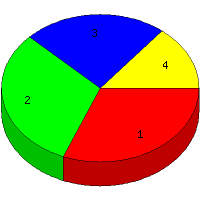

Week of 8/30/2009 to 9/5/2009: Top
4 of
4 File Types (Extensions)
Sorted by Access Count
Individual file types as determined by file extensions. All URLs that
do not contain an extension are counted as directories.

| Rank |
Type |
Accesses |
% |
Bytes |
% |
| 1 |
jpg
|
42 |
31.11 |
1,539,114 |
75.22 |
| 2 |
htm
|
42 |
31.11 |
133,130 |
6.51 |
| 3 |
Directory (folder)
|
32 |
23.70 |
76,125 |
3.72 |
| 4 |
gif
|
19 |
14.07 |
297,684 |
14.55 |